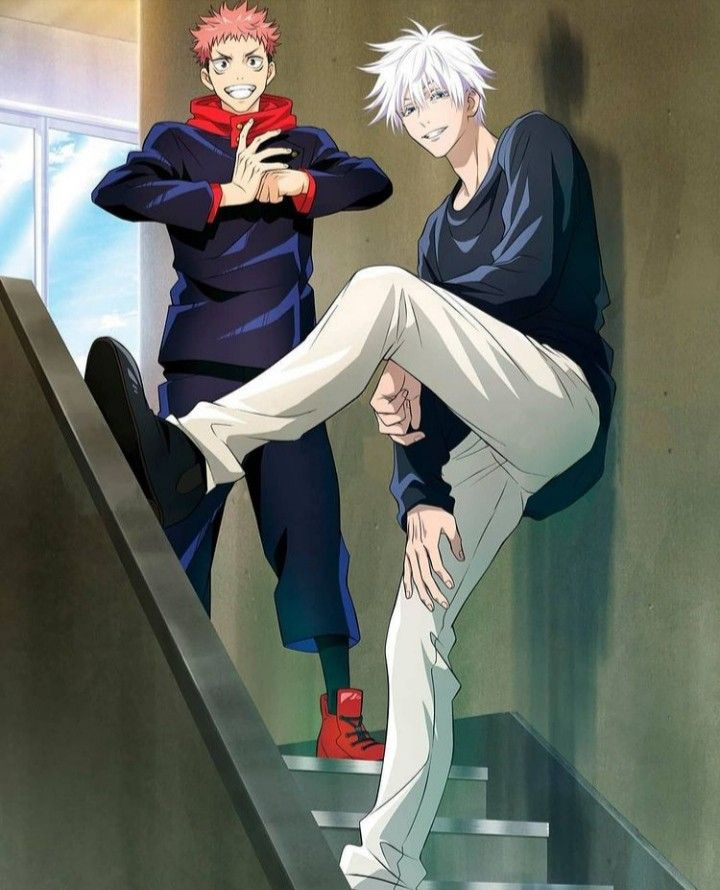
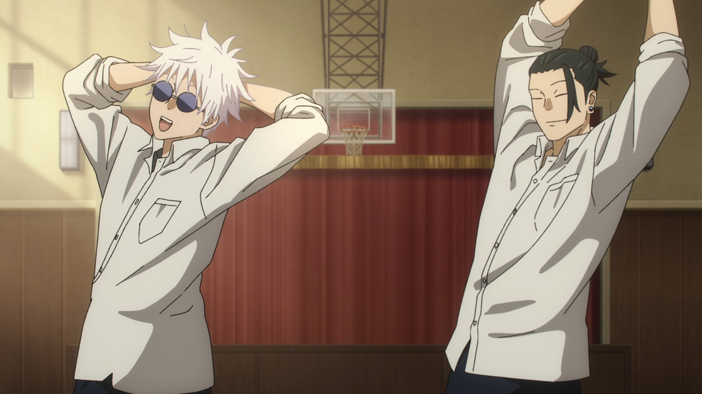
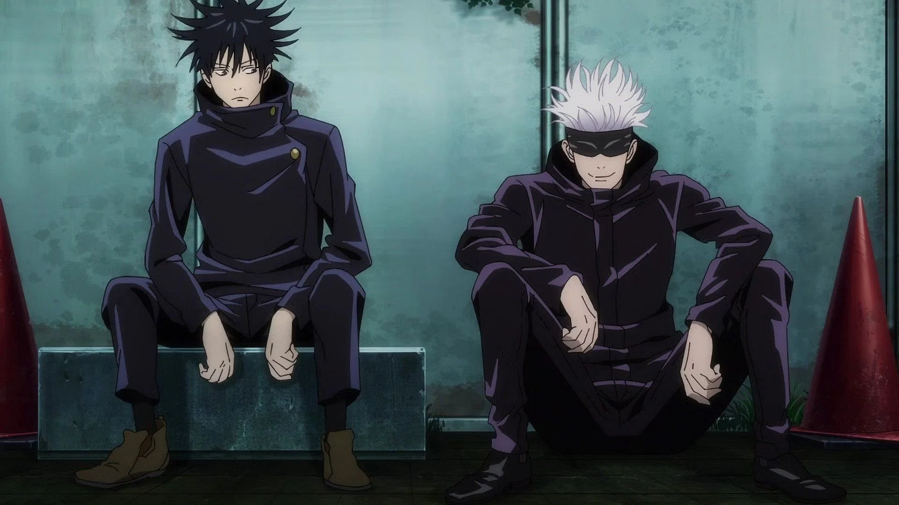

Companions
Yuji Itadori
Yuji itadori is Gojo's newest student. Within him is the king of curses Sukuna. Gojo plans to keep Yuji around to consume all of Sukuna's fingers and kill him once he's eaten them all.
Suguru Geto
Suguru Geto is Gojo's long time best friend. For a long time they were the two strongest sorcerers in the series. Until one day Geto had changed after a tramatic experience and went rogue.
Megumi Fushiguro
Megumi Fushiguro is another student of Gojo's. He weilds the powerful Ten Shadows technique. Gojo fought and killed Megumi's dad Toji, Toji asked gojo to look out for his son Megumi for him.
